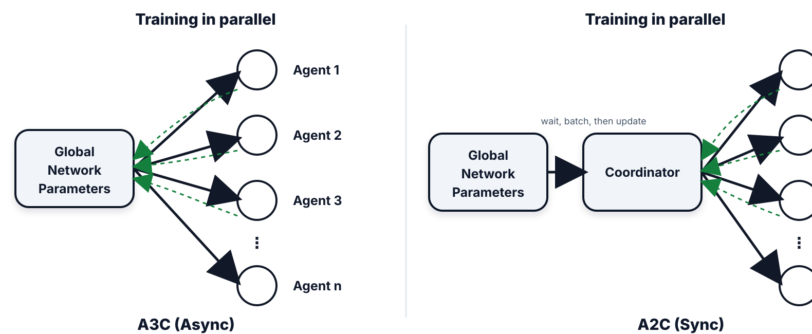

🎮 Policy Gradient策略梯度
Policy Gradient
1. Concept Understanding
Policy gradient maximizes expected trajectory reward by differentiating the policy parameters $\theta$ of $\pi_\theta(a\mid s)$. Instead of first learning an optimal Q-table, it asks: how should we change the policy so high-reward actions become more likely?
Lecture 25 derives vanilla policy gradient / REINFORCE. Lecture 27 then extends the same idea to actor-critic, PPO, and LLM reinforcement learning. These practical algorithms are marked in the PPT as not covered in exam, but they explain how modern RL systems are trained.
- Smooth policy changes. Small parameter changes smoothly shift action probabilities, unlike $\epsilon$-greedy policies that can flip abruptly when two Q-values swap order.
- Stochastic policies. PG can directly learn randomized behavior, which matters in games or settings where mixing actions is part of the optimum.
- Continuous actions. The policy can output distribution parameters, such as Gaussian mean $\mu_\theta(s)$ and standard deviation $\sigma_\theta(s)$, instead of enumerating actions.
- Sometimes simpler. In some tasks, approximating the policy is easier than approximating every action value.
2. Plain-English Explanation
If a sampled trajectory gets high reward, increase the log-probability of the actions that produced it. If it performs poorly, do not reinforce those actions as much.
Actor-critic adds a coach: the critic estimates whether an action was better than expected, so the actor does not overreact to noisy total rewards.
3. Core Intuition
The environment sampling process is not directly differentiable. The log-derivative trick uses $\nabla P(\tau)=P(\tau)\nabla\log P(\tau)$, so the gradient can be written in terms of $\nabla\log\pi_\theta(a_t\mid s_t)$, which is differentiable.
The Policy Gradient Theorem is the formal reason this works cleanly: the gradient can be written with action values and policy derivatives without differentiating the unknown state distribution induced by the policy.
PPO keeps policy-gradient updates from changing the policy too violently. GRPO, in Lecture 27, removes the learned value model and estimates advantages by comparing multiple completions for the same prompt.

4. Key Equations
What it does. The objective is expected trajectory reward under the current parameterized policy.
What it does. Increase probabilities of actions with high $q_\pi(s,a)$ in states that the current policy actually visits.
What it does. Estimate the gradient from sampled trajectories: high-return trajectories increase log-probability of the actions they took.
What it does. If $G_t$ is large, move parameters in the direction that makes the sampled action more likely in that state.
What it does. The update asks whether the action did better than the state baseline, not merely whether the whole episode return was large.
What it does. A state-only baseline changes the variance of the estimator but has zero expected contribution to the gradient.
What it does. The chosen action's feature vector is compared against the policy's average feature vector in that state.
What it does. In LLM RL, the state is prompt plus previous tokens, and the action is the next token.
What it does. This moves the gradient from the sampling probability into a log-probability gradient that the policy network can compute.
5. Worked Examples
Write $J=\int P_\theta(\tau)R(\tau)d\tau$. Then $\nabla J=\int P_\theta(\tau)R(\tau)\nabla\log P_\theta(\tau)d\tau$. In an MDP, only policy terms depend on $\theta$, so $\nabla\log P_\theta(\tau)=\sum_t\nabla\log\pi_\theta(a_t|s_t)$.
For a fixed state, $\mathbb{E}[b(s)\nabla\log\pi(A|s)]=0$, so subtracting $b(s)$ does not bias the gradient. If $Q(s,a)=12$ and $V(s)=9$, the advantage is $3$: the action was better than the state baseline. If $Q(s,a)=7$, advantage is $-2$.
If the chosen action has feature $x(s,a)$ and the current policy averages features as $\sum_b\pi(b|s)x(s,b)$, the eligibility vector is their difference. Positive-gradient directions are exactly the features that make the chosen action stand out from the policy average.
For one prompt, sample several completions. Compare their rewards inside the group: completions that beat the group average get positive relative advantage; worse completions get negative relative advantage. This avoids training a separate value model.
6. Problem-Solving Tips
- Start from $J(\theta)=\mathbb{E}_{\tau}[R(\tau)]$.
- Use $\nabla P=P\nabla\log P$.
- Drop environment dynamics from the gradient if they do not depend on $\theta$.
- Replace full returns by $Q$, advantage, or a baseline when discussing variance reduction.
- For LLM RL, map policy to next-token distribution and reward to final answer correctness.
- For on-policy questions, remember old trajectories become stale after $\theta$ changes unless the algorithm adds an importance-sampling or clipping correction.
| Feature | Q-learning | Policy Gradient / REINFORCE |
|---|---|---|
| Nature | Model-free, off-policy | Model-free, on-policy |
| Learning goal | Learn $Q$, then derive a greedy policy | Optimize $\pi_\theta$ directly |
| Action space | Best fit for discrete actions | Natural for stochastic or continuous actions |
| Tradeoff | Often more sample-efficient | Often higher variance, but more flexible |
7. Common Mistakes
- Calling vanilla policy gradient off-policy; it needs fresh samples from the current policy.
- Forgetting the log in $\nabla\log\pi$.
- Differentiating the environment transition when it does not depend on $\theta$.
- Using an action-dependent baseline and claiming it is automatically unbiased.
- Reusing old trajectories as if vanilla PG were off-policy. After the policy changes, the sampled action distribution no longer matches the current $\pi_\theta$.
- Ignoring PPO's reason for clipping: repeated updates on the same trajectories can destroy the policy.
8. Exam Focus
- Core exam: policy-gradient objective, log-derivative trick, on-policy nature, baseline idea.
- Be able to state the Policy Gradient Theorem and explain each symbol in $\sum_s\mu_\pi(s)\sum_a q_\pi(s,a)\nabla_\theta\pi_\theta(a|s)$.
- Be able to write the REINFORCE update, prove the state-only baseline has zero expected gradient, and compute the softmax eligibility vector.
- Know why PG is useful for smooth stochastic policies and continuous action spaces.
- Lecture 27 practical context: actor-critic reduces variance with advantage; PPO limits destructive updates; LLM-as-MDP uses token actions; GRPO compares completions for the same prompt.
- The PPT explicitly marks actor-critic, PPO, LLM RL, RLVR, and GRPO as not covered in exam.
9. Quick Checklist
Last-minute recall
- $J(\theta)=E[R(\tau)]$.
- PG directly optimizes $\pi_\theta(a|s)$.
- $\nabla J\approx R(\tau)\sum_t\nabla\log\pi(a_t|s_t)$.
- REINFORCE uses $G_t\nabla\log\pi(A_t|S_t)$.
- On-policy: collect trajectories from current policy.
- Baseline: subtract $b(s)$ to reduce variance without bias.
- Advantage = $Q-V$; better-than-average action signal.
- Softmax eligibility = chosen features minus policy-average features.
- PPO clips policy updates; GRPO uses group-relative rewards.
- LLM action = next token; reward can be verifiable correctness.
策略梯度
1. 概念理解
Policy gradient 通过对策略 $\pi_\theta(a\mid s)$ 的参数 $\theta$ 求梯度，最大化期望轨迹奖励。它不一定先学最优 Q 表，而是直接问：怎样改变策略，让高回报动作更容易被采样？
Lecture 25 推导 vanilla policy gradient / REINFORCE；Lecture 27 继续把这个想法扩展到 actor-critic、PPO 和 LLM 强化学习。PPT 标注这些 practical algorithms 不在考试范围，但它们解释了现代 RL 系统怎么训练。
- Smooth policy changes. 参数小幅变化时，action probabilities 也平滑变化；不像 $\epsilon$-greedy，两个 Q-values 顺序一换，greedy action 可能突然翻转。
- Stochastic policies. PG 可以直接学习随机策略，在 Poker 这类需要 bluff / mixed strategy 的任务里很自然。
- Continuous actions. 策略可以输出分布参数，比如 Gaussian 的 mean $\mu_\theta(s)$ 和 std $\sigma_\theta(s)$，不用枚举无限多 actions。
- Sometimes simpler. 有些任务里，直接近似 policy 比近似所有 action values 更容易。
2. 大白话理解
如果某条采样轨迹回报高，就提高这条轨迹上动作的 log-probability；如果表现差，就少强化这些动作。
Actor-critic 多了一个“教练”：critic 估计某个动作是否比预期更好，避免 actor 被噪声很大的总回报带偏。
3. 核心直觉
环境采样过程通常不能直接对策略参数求导。Log-derivative trick 用 $\nabla P(\tau)=P(\tau)\nabla\log P(\tau)$，把梯度写到可微的 $\nabla\log\pi_\theta(a_t\mid s_t)$ 上。
Policy Gradient Theorem 的关键意义是：梯度可以写成 action value 和 policy derivative 的形式，不需要直接对未知的 state-visitation distribution 求导。
PPO 的作用是限制 policy-gradient 更新不要太暴力。Lecture 27 中 GRPO 则去掉 learned value model，通过比较同一个 prompt 的多个 completions 来估计 advantages。
4. 关键公式
这个公式在做什么？ 目标是在当前参数化策略下，让采样 trajectory 的期望回报最大。
这个公式在做什么？ 当前策略经常访问的 state 更重要；在这些 state 里，要提高 high-$q_\pi$ actions 的概率。
这个公式在做什么？ 用采样 trajectories 估计梯度：高回报轨迹会提高其中动作的 log-probability。
这个公式在做什么？ 如果 $G_t$ 很高，就沿着“让这个 state 下这个 action 更容易出现”的方向更新参数。
这个公式在做什么？ 更新看的不是 episode return 绝对有多大，而是 action 相比这个 state 的正常水平好多少。
这个公式在做什么？ state-only baseline 改变 estimator 的 variance，但它的期望梯度贡献是 0。
这个公式在做什么？ chosen action 的 feature vector 减去当前 policy 的平均 feature vector；它告诉你 chosen action 比平均行为“多了哪些特征”。
这个公式在做什么？ 在 LLM 强化学习里，state 是 prompt 加已生成 tokens，action 是下一个 token。
这个公式在做什么？ 这个技巧把对采样概率的梯度，转成策略网络能计算的 log 概率梯度。
5. 例题精解
写 $J=\int P_\theta(\tau)R(\tau)d\tau$。则 $\nabla J=\int P_\theta(\tau)R(\tau)\nabla\log P_\theta(\tau)d\tau$。在 MDP 中，只有策略项依赖 $\theta$，所以 $\nabla\log P_\theta(\tau)=\sum_t\nabla\log\pi_\theta(a_t|s_t)$。
固定一个 state 时，$\mathbb{E}[b(s)\nabla\log\pi(A|s)]=0$，所以减掉 $b(s)$ 不会让 gradient 产生 bias。若 $Q(s,a)=12$、$V(s)=9$，advantage 为 $3$：动作比 state baseline 好；若 $Q(s,a)=7$，advantage 为 $-2$。
如果 chosen action 的 feature 是 $x(s,a)$，当前 policy 的平均 feature 是 $\sum_b\pi(b|s)x(s,b)$，eligibility vector 就是两者之差。正方向对应“让 chosen action 更突出的那些特征”。
对同一个 prompt 采样多个 completions，在组内比较奖励：高于组平均的 completion 得正 relative advantage，低于组平均的得负 relative advantage。这样可以不用单独训练 value model。
6. 题型与解题步骤
- 从 $J(\theta)=\mathbb{E}_{\tau}[R(\tau)]$ 出发。
- 使用 $\nabla P=P\nabla\log P$。
- 若环境 dynamics 不依赖 $\theta$，梯度里把它去掉。
- 讨论降方差时，把总 return 替换成 $Q$、advantage 或 baseline。
- LLM RL 题把策略映射成 next-token distribution，把奖励映射成最终答案正确性。
- On-policy 题要记住：$\theta$ 一更新，旧 trajectories 就和当前 policy 不匹配；除非算法额外加 importance sampling 或 clipping correction。
| Feature | Q-learning | Policy Gradient / REINFORCE |
|---|---|---|
| Nature | Model-free、off-policy | Model-free、on-policy |
| Learning goal | 先学 $Q$，再导出 greedy policy | 直接优化 $\pi_\theta$ |
| Action space | 更适合 discrete actions | 更自然处理 stochastic / continuous actions |
| Tradeoff | 通常 sample efficiency 更高 | variance 常更高，但表达更灵活 |
7. 常见错误
- 把 vanilla policy gradient 说成 off-policy；它需要当前策略采样的新轨迹。
- 漏掉 $\nabla\log\pi$ 中的 log。
- 对不依赖 $\theta$ 的环境转移求导。
- baseline 依赖 action 还声称自动无偏。
- 把旧 trajectories 当成 vanilla PG 可以随便复用的数据。Policy 一变，采样分布就不再等于当前 $\pi_\theta$。
- 忽略 PPO clipping 的动机：重复使用同一批 trajectories 更新太多会破坏策略。
8. 考试重点
- 核心考试点：policy-gradient 目标、log-derivative trick、on-policy 性质、baseline 思想。
- 会说清 Policy Gradient Theorem，并解释 $\sum_s\mu_\pi(s)\sum_a q_\pi(s,a)\nabla_\theta\pi_\theta(a|s)$ 里每个符号。
- 会写 REINFORCE update，会证明 state-only baseline 期望梯度为 0，会算 softmax eligibility vector。
- 知道 PG 为什么适合 smooth stochastic policies 和 continuous action spaces。
- Lecture 27 practical context：actor-critic 用 advantage 降方差；PPO 限制破坏性更新；LLM-as-MDP 以 token 为动作；GRPO 比较同 prompt 的多个 completions。
- PPT 明确 actor-critic、PPO、LLM RL、RLVR、GRPO 不在考试范围。
9. 速记清单
最后一刻能默
- $J(\theta)=E[R(\tau)]$。
- PG 直接优化 $\pi_\theta(a|s)$。
- $\nabla J\approx R(\tau)\sum_t\nabla\log\pi(a_t|s_t)$。
- REINFORCE 用 $G_t\nabla\log\pi(A_t|S_t)$。
- On-policy：用当前策略采样轨迹。
- Baseline：减 $b(s)$ 降 variance，不引入 bias。
- Advantage = $Q-V$；表示比 state 平均动作好多少。
- Softmax eligibility = chosen features - policy-average features。
- PPO clip policy update；GRPO 用组内相对奖励。
- LLM action = next token；reward 可为可验证正确性。